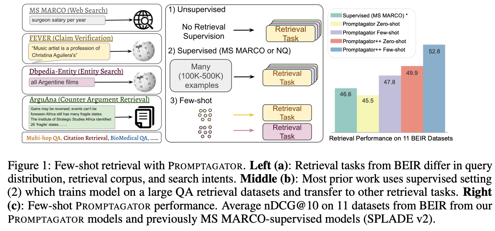

blog
About
自然言語処理技術ブログ
Categories
All
(23)
Information_retrieval
(5)
LLM
(6)
LLMs
(7)
LangChain
(7)
NLP
(19)
Speech Recognition
(2)
Web
(2)
paper
(5)
Order By
Default
Title
Date - Oldest
Date - Newest
なぜLLMはMacBookでも動くのか？計算力とメモリから見るその仕組み
LLM
Web
最近、OpenAIのO1レベルのOSSモデル、DeepSeek-R1が出ました。そして、XではM4 64GBのMac miniを8台繋いでクラスターにして、671Bのモデルを動かしたスレッドがありました。
Jan 24, 2025
LangserveとVercel AI SDKを使ってGenAIデモアプリをクイックに作る
LLM
Web
Vercel AI SDKは、Vercel社が提供するAIアプリケーション開発のための強力なフレームワークです。これを使えば、AIアプリケーションの開発が驚くほど簡単になります。
Aug 15, 2024
LLMの推論速度を劇的に加速する方法 Speculative Decoding の解説
NLP
LLM
皆さんに質問です。 「モデルの精度を落とさず、計算リソースも増やさず、推論速度だけを2倍にする方法」 があるとしたら——それは魔法でしょうか？それとも現実の技術でしょうか？
Feb 23, 2024
LLM版のPyTorchーDSPyの紹介
NLP
LLM
LangChain
DSPyはStanford大学が開発したLLMのプロンプトとウェイトを自動的に最適化できるフレームワークです。DSPyは概念的にPyTorchに似ています。プログラムでモジュールを定義し、使うPromptをモデルのウェイトとして扱い、学習データで最適なPromptを学習させます。DSPyの中ではこの学習のステップを「Compile」と呼んでいます。
Feb 23, 2024
Multi-Vector Retrieverの使い方とその効果
NLP
LLM
LangChain
この記事では、
Multi-Vector Retriever
の使用方法を紹介し、複数の実験を通じてその効果を検証しました。実験から得られた主な知見は以下の3点です。
Dec 10, 2023
Stanford CS224N 深層学習による自然言語処理 Lecture 3 まとめ
NLP
今日は3回目のレクチャーです。今回の授業は自然言語処理とは関係しなくて、深層学習の内容になります。その辺に詳しい方はこのレクチャーを飛ばして良いです。
Oct 15, 2023
Stanford CS224N 深層学習による自然言語処理 Lecture 2 まとめ
NLP
Word2vecのモデルを紹介し、ランダムなワードベクトルから始めて、テキストの大量のコーパスを通じて各ワードを反復処理します。各位置で、中心ワードの周囲にどのワードが出現するかを予測しようとします。これは、中心ワードとコンテキストワードのワードベクトル間のドット積に基づいて定義される確率分布によって行います。これにより、あるワードが特定のコンテ…
Oct 13, 2023
Stanford CS224N 深層学習による自然言語処理 Lecture 1 まとめ
NLP
Stanford University CS224Nは深層学習による自然言語処理の授業です。授業のビデオ、使用したスライド、また宿題等、授業のすべてがインタネットで公開されています。
Oct 11, 2023
RAG質問応答システムに使うRetrieverの精度比較
NLP
LLM
今回はRAGのRetrieverの性能を比較しました。 その結果としては、
Jul 16, 2023
日本語Embeddingモデルのベンチマーク比較: OpenAIが圧倒的な精度でリード
NLP
LLMs
LangChain
質問応答システムを作成する際、最初のステップは関連するドキュメントをデータベースから取得することです。これは通常、クエリをOpenAIのAPIを使用して埋め込みに変換し、データベース内の埋め込みとの距離を計算して近い順に並べることで行われます。
Jun 1, 2023
音声基礎モデルの紹介 Part2
Speech Recognition
音声基礎モデルに関する内容を3部分に分けて紹介しています。このポストはPart2と3について紹介します。
May 28, 2023
音声基礎モデルの紹介 Part1
Speech Recognition
本文の内容はYoutubeで音声認識に関する講義に基づいています。全体は3部分に分けられます。本文は音声表現学習に焦点を当て、対照学習モデルと予測モデルの両方について説明します。次のパートでは、音声大型言語モデルやその他の音声基礎モデルについて詳しく説明します。
May 27, 2023
GPT文書校正アシスタント
NLP
LLMs
ChatGPTが登場する前、書いたものが正しいかをチェックするために、いつも「Back Translation」の手法を使っていました。つまり、DeepLでまず書いた日本語を中国語に訳し、正しい意味を伝えたかを確認します。修正したものを日本語に訳し、それに基づいて元の文書を修正します。
May 19, 2023
LangChain Hypothetical Document Embeddings (HyDE) 全面解説
NLP
LLMs
LangChain
Hypothetical Document Embeddings (HyDE)は去年提出した情報検索の精度を向上させるための手法です。
May 15, 2023
Azure OpenAI Serviceの利用について
NLP
LLMs
最近、GPTを用いた提案を行う際のお作法についていくつかの問い合わせを受けています。実は、筆者もGPTを利用したプロジェクトを担当し、いくつかの問題でコケた経験があります。その経験をまとめてみたいと思います。
May 10, 2023
LangChain Agentの全面解説
NLP
LLMs
LangChain
LangChainの中に最もハイレベルな概念としてはAgentです。以前の投稿の中でも話ましたが、LangChainはまだ未熟なライブラリなので、Agentの実装は複雑なものになっていますし、中身の挙動を説明するドキュメントもなかったので、本文ではAgentの使い方から、インプットからアウトプットまでの流れを説明していきます。
May 9, 2023
LangChainのベーシックを全面解説する
NLP
LLMs
LangChain
OpenAIのGPTのAPIを利用してアプリを作成するには、今まで一番使いやすいパッケージはLangChain🦜️🔗 だと思います。本文では、LangChainの基本的な使い方を優しく説明します。
May 6, 2023
OpenAIのGPTのAPIのToken数に関する調査
NLP
LLMs
LangChain
OpenAIのGPTモデルでドキュメントを処理する際に、日本語の1文字は大よそ1Tokenに等しいです。千文字のドキュメントを処理するためには、概算で、スピード重視の
gpt-3.5-turbo
を使う場合は0.59円かかります。性能重視の
gpt-4-32k
を利用する場合は、9.7円かかります。
May 5, 2023
InPars light 論文解読
NLP
Information_retrieval
paper
InPars-lightは、無料で利用可能な言語モデルBLOOMをランキングモデルを使用し、1000個ではなく100個の候補レコードを再ランクしした。 先行研究の主要な知見を再現するだけでなく、Consistency checkingとAll-domain…
May 2, 2023
InPars V2 論文解読
NLP
Information_retrieval
paper
InPars V2論文では、Query生成に使用するLLMがGPT3からオープンソースのGPT-J(6B)に変更され、生成したQueryのフィルタリング方法がLog…
May 1, 2023
HyDE 論文解読
NLP
Information_retrieval
paper
HyDE論文では、教師なしのZero-shot dense retrievalシステムを提案。従来のDense…
Apr 30, 2023

Promptagator 論文解読
NLP
Information_retrieval
paper
Promptagator論文では、Few-shot Retrieval…
Apr 29, 2023
InPars 論文解読
NLP
Information_retrieval
paper
InPars論文では、擬似データ（Pseudo data）生成によるランキングモデル学習手法を提案。LLMを用いて擬似データを生成し、それを使ってモデルを学習させることで、情報検索（IR）の精度を向上させる。実験では、生成された擬似データでMonoT5をFine-tuningし、結果として従来のUnsupervisedモデルより優れた性能を示した。
Apr 29, 2023
No matching items